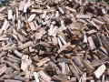

Making Iron at the Iron Works
Charcoal
Firewood
Charcoal
Bog iron ore
Gabbro
Charcoal, bog iron ore, and gabbro were the raw materials that produced molten liquid iron from the fiery blast furnace.


The liquid iron cooled into solid pig iron.
Rollover each building
BLAST FURNACE
Iron was separated from the bog iron ore in the high temperatures of the blast furnace. The fires ran continuously, 24 hours per day, for 30-40 weeks straight.
FORGE
The iron was shaped into iron bars by undergoing a process of heating and hammering. Machinery included a 500 pound hammer.
ROLLING SLITTING MILL
The iron bars were heated and sent through rollers, which created flattened iron pieces. The pieces were used to make tools, tires, and other items. Other rolled pieces were shaped into thin rods by a slitting machine. The rods would be cut into nails by colonial blacksmiths.